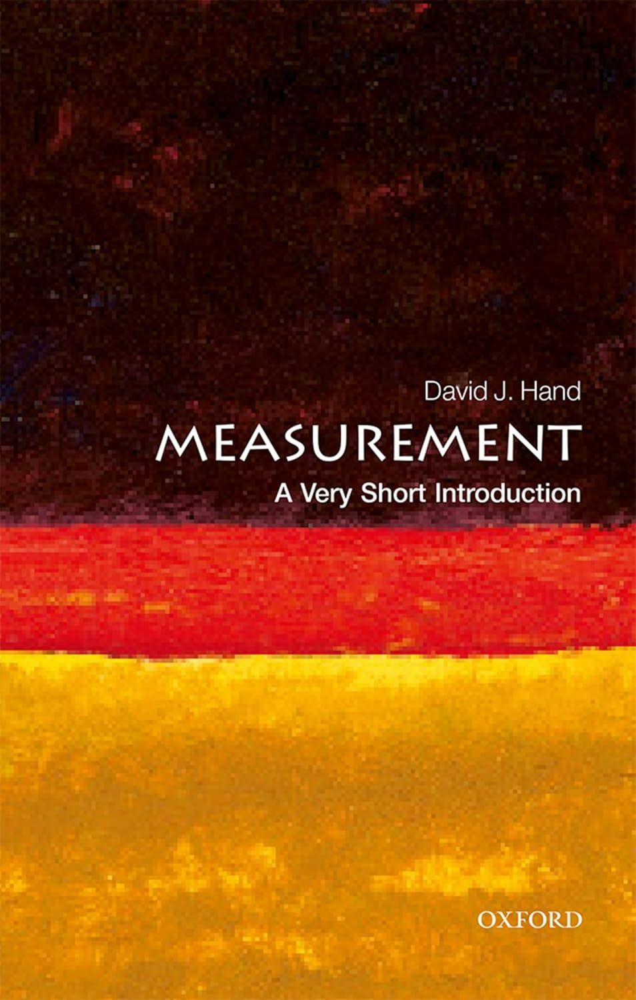
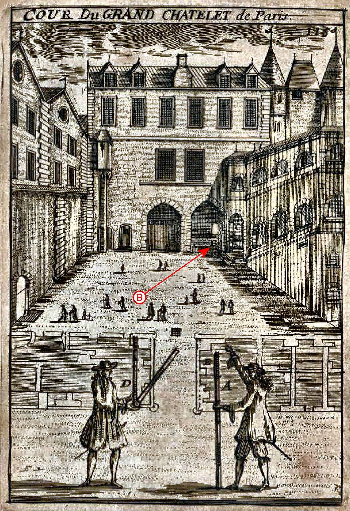
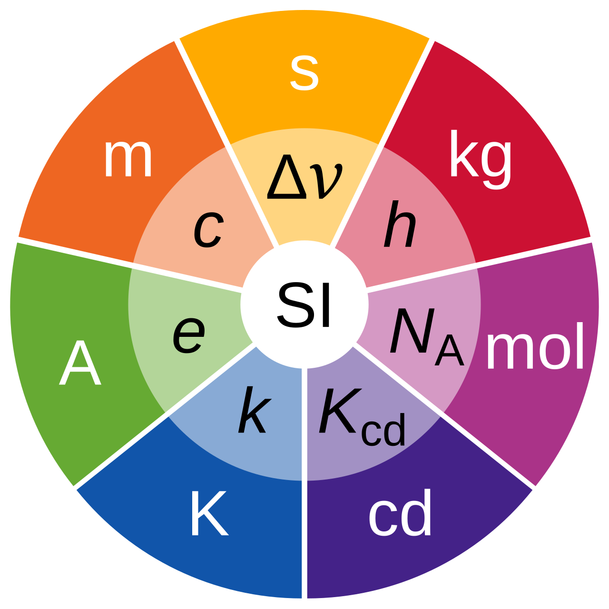

Measurement: A Very Short Introduction, Very Short Introductions (Oxford, 2016; online edn, Oxford Academic, 27 Oct. 2016), https://doi.org/10.1093/actrade/9780198779568.001.0001.
Measurement is as old as civilization:
Can you find examples of measurements that are used in each case?
Why do we measure things?
What references should we pick?
(For example for length?)
natural objects as measurements
human activity
variability of the references
arbitrariness of choice of reference
Solution 1: statistics: compute averages
Jacob Koebel (1570)
Solution 2: use specific objects as references (more stable), make copies and share them.

Solution 3: use more fundamental physical objects as references (more stable)
1791, French Academy of Science:
This causes many challenges:
This is still the case today!
“a pint of beer…”
US pint < UK pint
473 ml < 569 ml
How can we fix this?
… or rather complexity
Solution: enforce a single unified system
1960: 11th General conference on Weight and Measure

(aka what units should you pick?)
More detailed explanation:
Examples:
What key measurement concepts are being introduced in these video?